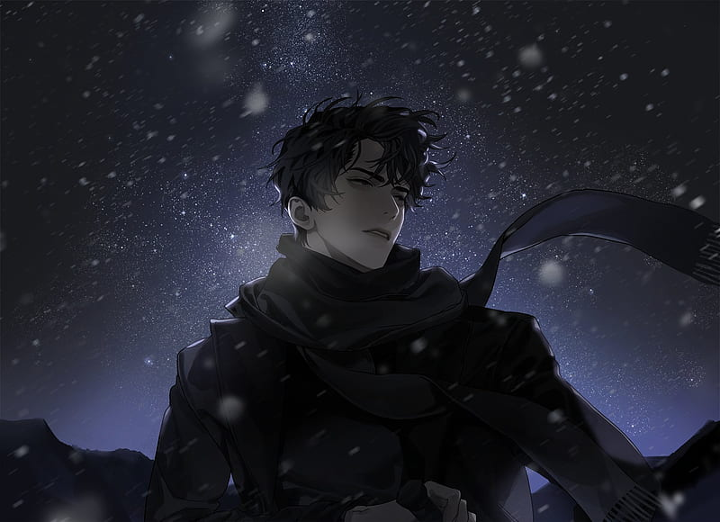
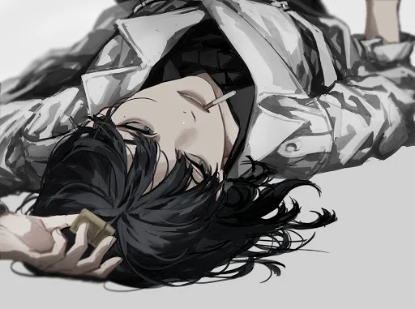

POR QUE LER ORV?
Omniscient Reader's Viewpoint (ORV), ou "Leitor Onisciente", não é apenas mais uma história sobre o fim do mundo. É uma jornada épica que redefine o significado de narrativa, explorando a relação entre o leitor, o protagonista e o autor de maneiras surpreendentes. Se você busca uma obra com profundidade, aqui estão alguns motivos para mergulhar de cabeça:
- Uma Premissa Única: Imagine que o mundo se transforma no universo do seu livro favorito, e só você conhece o enredo completo. Essa é a realidade de Kim Dokja. A forma como ele usa seu conhecimento para subverter a história original e salvar as pessoas que ama é o motor de uma trama cheia de reviravoltas e estratégias geniais.
- Personagens Inesquecíveis: Longe de heróis perfeitos, os personagens de ORV são complexos, cheios de falhas e moralmente ambíguos. Desde o calculista, mas altruísta, Kim Dokja, até o protagonista original e eternamente regressor, Yoo Jonghyuk, cada personagem tem suas próprias motivações e um desenvolvimento cativante.
- World-Building Grandioso: A história constrói um universo fascinante onde mitologias de todo o mundo se tornam reais. As "Constelações" (seres históricos e míticos) assistem e patrocinam os humanos, criando um sistema de poder complexo e original.
- Uma Carta de Amor à Leitura: No seu cerne, ORV é uma homenagem a todas as histórias que já lemos e aos mundos que elas nos permitiram habitar. A obra explora temas como destino, livre-arbítrio e o poder que uma história tem de mudar a realidade e, mais importante, de nos salvar.
CURIOSIDADES DO UNIVERSO ORV
- Autoria Misteriosa: "Sing Shong" (싱숑) não é uma pessoa, mas sim o pseudônimo de um casal de autores (marido e mulher) que escreveram a novel juntos. Eles mantêm suas identidades em segredo até hoje.
- Sucesso Absoluto: A webnovel original foi serializada na plataforma coreana Munpia e concluída com 551 capítulos. Seu sucesso foi estrondoso, gerando um dos fandoms mais dedicados e apaixonados da Coreia do Sul e, posteriormente, do mundo.
- O Que é o Star Stream?: O "Star Stream" é o sistema intergaláctico que transmite os "cenários" apocalípticos como forma de entretenimento para as Constelações. É, literalmente, um canal de streaming onde a sobrevivência da humanidade é o conteúdo principal.
- O Número 1864: O número da regressão de Yoo Jonghyuk na qual Kim Dokja interfere, 1864, aparece frequentemente na história de formas simbólicas e em momentos cruciais, tornando-se um número icônico para os fãs. Outra variação importante que aparece é a do "mundo paralelo", a volta 999.
- Adaptações a Caminho: Além da popularíssima adaptação em webtoon, que traz à vida as cenas da novel com uma arte espetacular, um filme em live-action está em produção na Coreia do Sul, com um elenco de estrelas, incluindo os atores Lee Min-ho (como Yoo Jonghyuk) e Ahn Hyo-seop (como Kim Dokja).